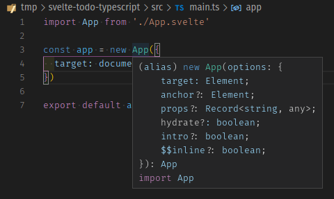
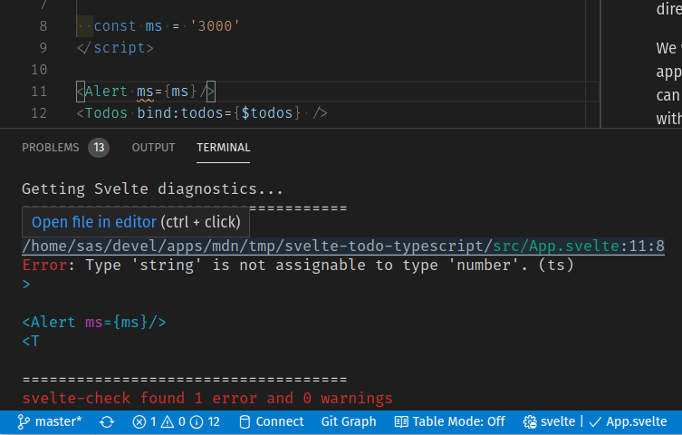
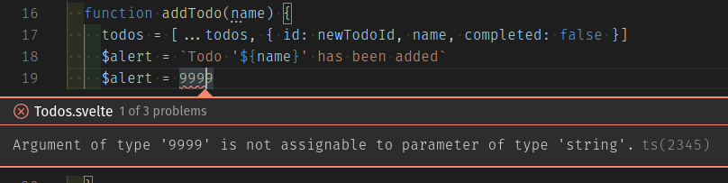

In the last article we learned about Svelte stores and even implemented our own custom store to persist the app's information to Web Storage. We also had a look at using the transition directive to implement animations on DOM elements in Svelte.
We will now learn how to use TypeScript in Svelte applications. First we'll learn what TypeScript is and what benefits it can bring us. Then we'll see how to configure our project to work with TypeScript files. Finally we will go over our app and see what modifications we have to make to fully take advantage of TypeScript features.
| Prerequisites: |
At minimum, it is recommended that you are familiar with the core HTML, CSS, and JavaScript languages, and have knowledge of the terminal/command line. You'll need a terminal with node + npm installed to compile and build your app. |
|---|---|
| Objective: | Learn how to configure and use TypeScript when developing Svelte applications. |
Note that our application is fully functional and porting it to TypeScript is completely optional. There are different opinions about it, and in this chapter we will talk briefly about the pros and cons of using TypeScript. Even if you are not planning to adopt it, this article will be useful for allowing you to learn what it has to offer and help you make your own decision. If you are not interested at all in TypeScript, you can skip to the next chapter, where we will look at different options for deploying our Svelte applications, further resources, and more.
Clone the github repo (if you haven't already done it) with:
git clone https://github.com/opensas/mdn-svelte-tutorial.git
Then to get to the current app state, run
cd mdn-svelte-tutorial/07-typescript-support
Or directly download the folder's content:
npx degit opensas/mdn-svelte-tutorial/07-typescript-support
Remember to run npm install && npm run dev to start your app in development mode.
Unfortunately, TypeScript support is not yet available in the REPL.
TypeScript is a superset of JavaScript that provides features such as optional static typing, classes, interfaces, and generics. The goal of TypeScript is to help catch mistakes early through its type system and make JavaScript development more efficient. One of the big benefits is enabling IDEs to provide a richer environment for spotting common errors as you type the code.
Best of all, JavaScript code is valid TypeScript code; TypeScript is a superset of JavaScript. You can rename most of your .js files to .ts files and they will just work.
Our TypeScript code will be able to run everywhere JavaScript can run. How is that possible? TypeScript "transpiles" our code to vainilla JavaScript. That means that it parses TypeScript code and produces the equivalent vanilla JavaScript code for browsers to run.
Note: If you are curious about how TypeScript transpiles our code to JavaScript you can have a look at the TypeScript Playground.
First class TypeScript support has been Svelte's most requested feature for quite some time. Thanks to the hard work of the Svelte team, together with many contributors, we have an official solution ready to be put to the test. In this section we'll show you how to setup a Svelte project With TypeScript support to give it a try.
TypeScript's main advantages are:
TypeScript also has some disadvantages:
There seems to be a broad consensus that TypeScript is particularly well suited for large-scale projects, with many developers working on the same code base. And it is indeed being used by several large-scale projects, like Angular 2, Vue 3, Ionic, Visual Studio Code, Jest and even the Svelte compiler. Nevertheless, some developers prefer to use it even on small projects like the one we are developing.
In the end, it's your decision. In the following sections we hope to give you more evidence to make up your mind about it.
You can start a new Svelte TypeScript project using the standard template. All you have to do is run the following terminal commands (run them somewhere where you are storing your Svelte test projects — it creates a new directory):
npx degit sveltejs/template svelte-typescript-app cd svelte-typescript-app node scripts/setupTypeScript.js
This creates a starter project that includes TypeScript support, which you can then modify as you wish.
Then you'll have to tell npm to download dependencies and start the project in development mode, like we usually do:
npm install npm run dev
To add TypeScript support to an existing Svelte project you can follow these instructions. Alternatively, you can download the setupTypeScript.js file to a scripts folder inside your project's root folder, and then run node scripts/setupTypeScript.js.
You can even use degit to download the script. That's what we will do to start porting our application to TypeScript.
Note: Remember that you can run npx degit opensas/mdn-svelte-tutorial/07-typescript-support svelte-todo-typescript to get the complete to-do list application in JavaScript before you start porting it to TypeScript.
Go to the root directory of the project and enter these commands:
npx degit sveltejs/template/scripts scripts # download script file to a scripts folder node scripts/setupTypeScript.js # run it Converted to TypeScript.
You will need to re-run your dependency manager to get started.
npm install # download new dependencies npm run dev # start the app in development mode
These instructions apply to any Svelte project you'd like to convert to TypeScript. Just take into account that the Svelte community is constantly improving Svelte TypeScript support, so you should run npm update regularly to take advantage of the latest changes.
Note: if you find any trouble working with TypeScript inside a Svelte application, have a look at this troubleshooting/FAQ section about TypeScript support.
As we said before, TypeScript is a superset of JavaScript, so your application will run without modifications. Currently you will be running a regular JavaScript application with TypeScript support enabled, without taking advantage of any of the features that TypeScript provides. You can now start adding types progressively.
Once you have TypeScript configured, you can start using it from a Svelte component by just adding a <script lang='ts'> at the beginning of the script section. To use it from regular JavaScript files, just change the file extension from .js to .ts. You'll also have to update any corresponding import statements (don't include the .ts in your import statements; TypeScript chose to omit the extensions).
Note: using TypeScript in component markup sections is not supported yet. You'll have to use JavaScript from the markup, and TypeScript in the <script lang='ts'> section.
TypeScript provides code editors and IDEs with lots of information to allow them to deliver a friendlier development experience.
We'll use Visual Studio Code to do a quick test and see how we can get autocompletion hints and type-checking as we're writing components.
Note: If you don't wish to use VS Code, we also provide instructions for using TypeScript error checking from the terminal instead, slightly later on.
There is work in progress to support TypeScript in Svelte projects in several code editors; the most complete support so far is available in the Svelte for VS Code extension, which is developed and maintained by the Svelte team. This extension offers type checking, inspecting, refactoring, intellisense, hover-information, auto-completion, and other features. This kind of developer assistance is another good reason to start using TypeScript in your projects.
Note: Make sure you are using Svelte for VS Code and NOT the old "Svelte" by James Birtles, which has been discontinued. In case you have it installed, you should uninstall it and install the official Svelte extension instead.
Anyway, assuming you are inside the VS Code application, from the root of your project's folder, type code . (the trailing dot tells VS code to open the current folder) to open the code editor. VS Code will tell you that there are recommended extensions to install.
Clicking Install all will install Svelte for VS Code.

We can also see that the setupTypeScript.js file made a couple of changes to our project. The main.js file has been renamed to main.ts, which means that VS Code can provide hover-information on our svelte components:

We also get type-checking for free. If we pass an unknown property in the options parameter of the App constructor (for example a typo like traget instead of target) TypeScript will complain:

In the App.svelte component, the setupTypeScript.js script has added the lang="ts" attribute to the <script> tag. Moreover, thanks to type inference, in many cases we won't even need to specify types to get code assistance. For example, if you start adding an ms property to the Alert component call, TypeScript will infer from the default value that the ms property should be a number:

And if you pass something that is not a number it will complain about it:

The application template has a validate script configured that runs svelte-check against your code. This package allows you to detect errors and warnings normally displayed by a code editor from the command line, which makes it pretty useful for running it in a continuous integration (CI) pipeline. Just run npm run validate to check for unused CSS, and return A11y hints and TypeScript compile errors.
In this case, if you run npm run validate (either in the VS Code console or terminal) you will get the following error:

Even better, if you run it from the VS Code integrated terminal (you can open it with the Ctrl + ` keyboard shortcut), Cmd/Ctrl + clicking on the file name will take you to the line containing the error.
You can also run the validate script in watch mode with npm run validate -- --watch. In this case, the script will execute whenever you change any file. If you are running this in your regular terminal, you are advised to keep it running in the background in a separate terminal window of its own so that it can keep reporting errors but won't interfere with other terminal usage.
TypeScript supports structural typing. Structural typing is a way of relating types based solely on their members, even if you do not explicitly define the type.
We'll define a TodoType type to see how TypeScript enforces that anything passed to a component expecting a TodoType will be structurally compatible with it.
Inside the src folder create a types folder.
Add a todo.type.ts file inside it.
Give todo.type.ts the following content:
export type TodoType = {
id: number
name: string
completed: boolean
}
Note: the Svelte template uses svelte-preprocess 4.0.0 to support TypeScript. From that version onward you have to use export/import type syntax to import types and interfaces. Check this section of the troubleshooting guide for more information.
Now we'll use TodoType from our Todo.svelte component. First add the lang="ts" to our <script> tag.
Let's import the type and use it to declare the todo property. Replace the export let todo line with the following:
import type { TodoType } from '../types/todo.type'
export let todo: TodoType
Note: Another reminder — When importing a .ts file you have to omit the extension. Check the import section of the TypeScript manual for more information.
Now from Todos.svelte, we will instantiate a Todo component with a literal object as its parameter before the call to the MoreActions component, like this:
<hr />
<Todo todo={ { name: 'a new task with no id!', completed: false } } />
<!-- MoreActions -->
<MoreActions {todos}
Add the lang='ts' to the <script> tag of the Todos.svelte component, so that it knows to use the type checking we have specified.
We will get the following error:

By now you should get an idea about the kind of assistance we can get from TypeScript when building Svelte projects.
Now we will undo these changes in order to start porting our application to TypeScript, so we won't be bothered with all the validate warnings.
lang='ts' attribute from the Todos.svelte file.TodoType and the lang='ts' from Todo.svelte.We'll take care of them properly, later on.
Now we are ready to start porting our to-do list application to take advantage of all the features that TypeScript offers to us.
Let's start by running the validate script in watch mode inside your project root:
npm run validate -- --watch
this should output something like the following:
svelte-check "--watch" Loading svelte-check in workspace: ./svelte-todo-typescript Getting Svelte diagnostics... ==================================== svelte-check found no errors and no warnings
Note that if you are using a supporting code editor like VS Code, a simple way to start porting a Svelte component is to just add the <script lang='ts'> at the top of your component and look for the three-dotted hints:

Let's start with our Alert.svelte component.
Add lang="ts" into your Alert.svelte component's <script> tag. You'll see some warnings in the output of the validate script:
$ npm run validate -- --watch
> svelte-check "--watch"
./svelte-todo-typescript
Getting Svelte diagnostics...
====================================
./svelte-todo-typescript/src/components/Alert.svelte:8:7
Warn: Variable 'visible' implicitly has an 'any' type, but a better type may be inferred from usage. (ts)
let visible
./svelte-todo-typescript/src/components/Alert.svelte:9:7
Warn: Variable 'timeout' implicitly has an 'any' type, but a better type may be inferred from usage. (ts)
let timeout
./svelte-todo-typescript/src/components/Alert.svelte:11:28
Warn: Parameter 'message' implicitly has an 'any' type, but a better type may be inferred from usage. (ts)
Change = (message, ms) => {
./svelte-todo-typescript/src/components/Alert.svelte:11:37
Warn: Parameter 'ms' implicitly has an 'any' type, but a better type may be inferred from usage. (ts)
(message, ms) => {
You can fix these by specifying the corresponding types, like so:
export let ms = 3000
let visible: boolean
let timeout: number
const onMessageChange = (message: string, ms: number) => {
clearTimeout(timeout)
if (!message) { // hide Alert if message is empty
Note: There's no need to specify the ms type with export let ms:number = 3000 because TypeScript is already inferring it from its default value.
Now we'll do the same for the MoreActions.svelte component.
lang='ts' attribute, like before. TypeScript will warn us about the todos prop and the t variable in the call to todos.filter(t =>...).
Warn: Variable 'todos' implicitly has an 'any' type, but a better type may be inferred from usage. (ts) export let todos Warn: Parameter 't' implicitly has an 'any' type, but a better type may be inferred from usage. (ts) $: completedTodos = todos.filter(t => t.completed).length
We will use the TodoType we already defined to tell TypeScript that todos is a TodoType array — replace your export let todos line with the following:
import type { TodoType } from '../types/todo.type'
export let todos: TodoType[]
Notice that now TypeScript can infer that the t variable in todos.filter(t => t.completed) is of type TodoType. Nevertheless, if we think it makes our code easier to read, we could specify it like this:
$: completedTodos = todos.filter((t: TodoType) => t.completed).length
Most of the time TypeScript will be able to correctly infer the reactive variable type, but sometimes you might get an "implicitly has an 'any' type" error when working with reactive assignments. In those cases you can declare the typed variable in a different statement, like this:
let completeTodos: number $: completedTodos = todos.filter((t: TodoType) => t.completed).length
You can't specify the type in the reactive assignment itself. The following statement $: completedTodos: number = todos.filter[...] is invalid. For more information read How do I type reactive assignments? / I get an "implicitly has type 'any' error".
Now we'll take care of the FilterButton component.
Add the lang='ts' attribute to the <script> tag, as usual. You'll notice there are no warnings — TypeScript infers the type of the filter variable from the default value. But we know that there are only three valid values for the filter: all, active, and completed. So we can let TypeScript know about them by creating an enum Filter.
Create a filter.enum.ts file in the types folder.
Give it the following contents:
export enum Filter {
ALL = 'all',
ACTIVE = 'active',
COMPLETED = 'completed',
}
Now we will use this from the FilterButton component. Replace the content of the FilterButton.svelte file with the following:
<!-- components/FilterButton.svelte -->
<script lang='ts'>
import { Filter } from '../types/filter.enum'
export let filter: Filter = Filter.ALL
</script>
<div class="filters btn-group stack-exception">
<button class="btn toggle-btn" class:btn__primary={filter === Filter.ALL} aria-pressed={filter === Filter.ALL} on:click={()=> filter = Filter.ALL} >
<span class="visually-hidden">Show</span>
<span>All</span>
<span class="visually-hidden">tasks</span>
</button>
<button class="btn toggle-btn" class:btn__primary={filter === Filter.ACTIVE} aria-pressed={filter === Filter.ACTIVE} on:click={()=> filter = Filter.ACTIVE} >
<span class="visually-hidden">Show</span>
<span>Active</span>
<span class="visually-hidden">tasks</span>
</button>
<button class="btn toggle-btn" class:btn__primary={filter === Filter.COMPLETED} aria-pressed={filter === Filter.COMPLETED} on:click={()=> filter = Filter.COMPLETED} >
<span class="visually-hidden">Show</span>
<span>Completed</span>
<span class="visually-hidden">tasks</span>
</button>
</div>
Here we are just importing the Filter enum, and using it instead of the string values we used previously.
We will also use the Filter enum in the Todos.svelte component.
First add the lang='ts' attribute to it, as before.
Next, import the Filter enum — add the following import statement below your existing ones:
import { Filter } from '../types/filter.enum'
Now we will use it whenever we reference the current filter. Replace your two filter-related blocks with the following:
let filter: Filter = Filter.ALL
const filterTodos = (filter: Filter, todos) =>
filter === Filter.ACTIVE ? todos.filter(t => !t.completed) :
filter === Filter.COMPLETED ? todos.filter(t => t.completed) :
todos
$: {
if (filter === Filter.ALL) $alert = 'Browsing all todos'
else if (filter === Filter.ACTIVE) $alert = 'Browsing active todos'
else if (filter === Filter.COMPLETED) $alert = 'Browsing completed todos'
}
validate will still give us some warnings from Todos.svelte. Let's fix them.
Start by importing the TodoType and telling TypeScript that our todos variable is an array of TodoType. Replace export let todos = [] with the following two lines:
import type { TodoType } from '../types/todo.type'
export let todos: TodoType[] = []
Next we'll specify all the missing types. The variable todosStatus, which we used to programmatically access the methods exposed by the TodosStatus component, is of type TodosStatus. And each todo will be of type TodoType.
Update your <script> section to look like this:
<script lang='ts'>
import FilterButton from './FilterButton.svelte'
import Todo from './Todo.svelte'
import MoreActions from './MoreActions.svelte'
import NewTodo from './NewTodo.svelte'
import TodosStatus from './TodosStatus.svelte'
import { alert } from '../stores'
import { Filter } from '../types/filter.enum'
import type { TodoType } from '../types/todo.type'
export let todos: TodoType[] = []
let todosStatus: TodosStatus // reference to TodosStatus instance
$: newTodoId = todos.length > 0 ? Math.max(...todos.map(t => t.id)) + 1 : 1
function addTodo(name: string) {
todos = [...todos, { id: newTodoId, name, completed: false }]
$alert = `Todo '${name}' has been added`
}
function removeTodo(todo: TodoType) {
todos = todos.filter(t => t.id !== todo.id)
todosStatus.focus() // give focus to status heading
$alert = `Todo '${todo.name}' has been deleted`
}
function updateTodo(todo: TodoType) {
const i = todos.findIndex(t => t.id === todo.id)
if (todos[i].name !== todo.name) $alert = `todo '${todos[i].name}' has been renamed to '${todo.name}'`
if (todos[i].completed !== todo.completed) $alert = `todo '${todos[i].name}' marked as ${todo.completed ? 'completed' : 'active'}`
todos[i] = { ...todos[i], ...todo }
}
let filter: Filter = Filter.ALL
const filterTodos = (filter: Filter, todos: TodoType[]) =>
filter === Filter.ACTIVE ? todos.filter(t => !t.completed) :
filter === Filter.COMPLETED ? todos.filter(t => t.completed) :
todos
$: {
if (filter === Filter.ALL) $alert = 'Browsing all todos'
else if (filter === Filter.ACTIVE) $alert = 'Browsing active todos'
else if (filter === Filter.COMPLETED) $alert = 'Browsing completed todos'
}
const checkAllTodos = (completed: boolean) => {
todos = todos.map(t => ({...t, completed}))
$alert = `${completed ? 'Checked' : 'Unchecked'} ${todos.length} todos`
}
const removeCompletedTodos = () => {
$alert = `Removed ${todos.filter(t => t.completed).length} todos`
todos = todos.filter(t => !t.completed)
}
</script>
We are encountering the following errors related to passing todos to the TodosStatus.svelte (and Todo.svelte) components:
./src/components/Todos.svelte:70:39
Error: Type 'TodoType[]' is not assignable to type 'undefined'. (ts)
<TodosStatus bind:this={todosStatus} {todos} />
./src/components/Todos.svelte:76:12
Error: Type 'TodoType' is not assignable to type 'undefined'. (ts)
<Todo {todo}
This is because the todos prop in the TodosStatus component has no default value, so TypeScript has inferred it to be of type undefined, which is not compatible with an array of TodoType. The same thing is happening with our Todo component.
Let's fix it.
Open the file TodosStatus.svelte and add the lang='ts' attribute.
Then import the TodoType and declare the todos prop as an array of TodoType. Replace the first line of the <script> section with the following:
import type { TodoType } from '../types/todo.type'
export let todos: TodoType[]
We will also specify the headingEl, which we used to bind to the heading tag, as an HTMLElement. Update the let headingEl line with the following:
let headingEl: HTMLElement
Finally, you'll notice the following error reported, related to where we set the tabindex attribute. That's because TypeScript is type-checking the <h2> element and expects tabindex to be of type number.

To fix it, replace tabindex="-1" with tabindex={-1}, like this:
<h2 id="list-heading" bind:this={headingEl} tabindex={-1}>{completedTodos} out of {totalTodos} items completed</h2>
This way TypeScript can prevent us from incorrectly assigning it to a string variable.
Next we will take care of NewTodo.svelte.
As usual, add the lang='ts' attribute.
The warning will indicate that we have to specify a type for the nameEl variable. Set its type to HTMLElement like this:
let nameEl: HTMLElement // reference to the name input DOM node
Last for this file, we need to specify the correct type for our autofocus variable; update its definition like this:
export let autofocus: boolean = false
Now the only warnings that npm run validate emits are triggered by calling the Todo.svelte component; let's fix them.
Open the Todo.svelte file, and add the lang='ts' attribute.
Let's import the TodoType, and set the type of the todo prop. Replace the export let todo line with the following:
import type { TodoType } from '../types/todo.type'
export let todo: TodoType
The first warning we get is TypeScript telling us to define the type of the update() function's updatedTodo variable. This can be a little tricky because updatedTodo contains only the attributes of the todo that have been updated. That means it's not a complete todo — it only has a subset of a todo's properties.
For these kinds of cases, TypeScript provides several utility types to make it easier to apply these common transformations. What we need right now is the Partial<T> utility, which allows us to represent all subsets of a given type. The partial utility returns a new type based on the type T, where every property of T is optional.
We'll use it in the update() function — update yours like so:
function update(updatedTodo: Partial<TodoType>) {
todo = { ...todo, ...updatedTodo } // applies modifications to todo
dispatch('update', todo) // emit update event
}
With this we are telling TypeScript that the updatedTodo variable will hold a subset of the TodoType properties.
Now svelte-check tells us that we have to define the type of our action function parameters:
./07-next-steps/src/components/Todo.svelte:45:24 Warn: Parameter 'node' implicitly has an 'any' type, but a better type may be inferred from usage. (ts) const focusOnInit = (node) => node && typeof node.focus === 'function' && node.focus() ./07-next-steps/src/components/Todo.svelte:47:28 Warn: Parameter 'node' implicitly has an 'any' type, but a better type may be inferred from usage. (ts) const focusEditButton = (node) => editButtonPressed && node.focus()
We just have to define the node variable to be of type HTMLElement. In the two lines indicated above, replace the first instance of node with node: HTMLElement.
Next we'll take care of the actions.js file.
Rename it to actions.ts and add the type of the node parameter. It should end up looking like this:
// actions.ts
export function selectOnFocus(node: HTMLInputElement) {
if (node && typeof node.select === 'function' ) { // make sure node is defined and has a select() method
const onFocus = () => node.select() // event handler
node.addEventListener('focus', onFocus) // when node gets focus call onFocus()
return {
destroy: () => node.removeEventListener('focus', onFocus) // this will be executed when the node is removed from the DOM
}
}
}
Now update Todo.svelte and NewTodo.svelte where we import the actions file. Remember that imports in TypeScript don't include the file extension. In each case it should end up like this:
import { selectOnFocus } from '../actions'
Now we have to migrate the stores.js and localStore.js files to TypeScript.
Tip: the script npm run validate, which uses the svelte-check tool, will only check our application's .svelte files. If you want to also check the .ts files you can run npm run validate && npx tsc --noemit, which tells the TypeScript compiler to check for errors without generating the .js output files. You could even add a script to your package.json file that runs that command.
We'll start with stores.js.
Rename the file to stores.ts.
Set the type of our initialTodos array to TodoType[]. This is how the contents will end up:
// stores.ts
import { writable } from 'svelte/store'
import { localStore } from './localStore.js'
import type { TodoType } from './types/todo.type'
export const alert = writable('Welcome to the To-Do list app!')
const initialTodos: TodoType[] = [
{ id: 1, name: 'Visit MDN web docs', completed: true },
{ id: 2, name: 'Complete the Svelte Tutorial', completed: false },
]
export const todos = localStore('mdn-svelte-todo', initialTodos)
Remember to update the import statements in App.svelte, Alert.svelte, and Todos.svelte. Just remove the .js extension, like this:
import { todos } from '../stores'
Now onto localStore.js.
Update the import statement in stores.ts, like so:
import { localStore } from './localStore'
Start by renaming the file to localStore.ts.
TypeScript is telling us to specify the type of the key, initial, and value variables. The first one is easy — the key of our local web storage should be a string.
But initial and value should be any object that could be converted to a valid JSON string with the JSON.stringify method. So it is in fact any JavaScript object with a couple limitations, for example undefined, functions, and symbols are not valid JSON values.
So we'll create the type JsonValue to specify these conditions.
Create the file json.type.ts in the types folder.
Give it the following content:
export type JsonValue = string | number | boolean | null | JsonValue[] | { [key: string]: JsonValue }
The | operator lets us declare variables that could store values of two or more types. A JsonValue could be a string, a number, a boolean, and so on. In this case we are also making use of recursive types, to specify that a JsonValue can have an array of JsonValue, and also an object with properties of type JsonValue.
We will import our JsonValue type and use it accordingly. Update your localStore.ts file like this:
// localStore.ts
import { writable } from 'svelte/store'
import type { JsonValue } from './types/json.type'
export const localStore = (key: string, initial: JsonValue) => { // receives the key of the local storage and an initial value
const toString = (value: JsonValue) => JSON.stringify(value, null, 2) // helper function
const toObj = JSON.parse // helper function
if (localStorage.getItem(key) === null) { // item not present in local storage
localStorage.setItem(key, toString(initial)) // initialize local storage with initial value
}
const saved = toObj(localStorage.getItem(key)) // convert to object
const { subscribe, set, update } = writable(saved) // create the underlying writable store
return {
subscribe,
set: (value: JsonValue) => {
localStorage.setItem(key, toString(value)) // save also to local storage as a string
return set(value)
},
update
}
}
Now if we try to create a localStore with something that cannot be converted to JSON via JSON.stringify(), for example an object with a function as a property, VS Code/validate will complain about it:

And best of all, it will even work with the $store auto-subscription syntax. If we try to save an invalid value to our todos store using the $store syntax, like this:
<!-- App.svelte -->
<script lang="ts">
import Todos from './components/Todos.svelte'
import Alert from './components/Alert.svelte'
import { todos } from './stores'
// this is invalid, the content cannot be converted to JSON using JSON.stringify
$todos = { handler: () => {} }
</script>
The validate script will report the following error:
> npm run validate
Getting Svelte diagnostics...
====================================
./svelte-todo-typescript/src/App.svelte:8:12
Error: Argument of type '{ handler: () => void; }' is not assignable to parameter of type 'JsonValue'.
Types of property 'handler' are incompatible.
Type '() => void' is not assignable to type 'JsonValue'.
Type '() => void' is not assignable to type '{ [key: string]: JsonValue; }'.
Index signature is missing in type '() => void'. (ts)
$todos = { handler: () => {} }
This is another example of how specifying types can make our code more robust, and help us catch more bugs before they get into production.
And that's it. We've converted our whole application to use TypeScript.
Our stores have already been ported to TypeScript but we can do better. We shouldn't need to store any kind of value — we know that the alert store should contain string messages, and the todos store should contain an array of TodoType, etc. We can let TypeScript enforce this using TypeScript Generics; let's find out more.
Generics allow us to create reusable code components that work with a variety of types instead of a single type. They can be applied to interfaces, classes, and functions. Generic types are passed as parameters using a special syntax: they are specified between angle-brackets, and by convention are denoted with an upper-cased single char letter. Generic types allows us to capture the types provided by the user to be used later.
Let's see a quick example, a simple Stack class that let's us push and pop elements, like this:
export class Stack {
private elements = []
push = (element) => this.elements.push(element)
pop() {
if (this.elements.length === 0) throw new Error('The stack is empty!')
return this.elements.pop()
}
}
In this case elements is an array of type any, and accordingly the push() and pop() methods both receive and return a variable of type any. So it's perfectly valid to do something like the following:
const anyStack = new Stack()
anyStack.push(1)
anyStack.push('hello')
But what if we wanted to have a Stack that would only work with type string? We could do the following:
export class StringStack {
private elements: string[] = []
push = (element: string) => this.elements.push(element)
pop(): string {
if (this.elements.length === 0) throw new Error('The stack is empty!')
return this.elements.pop()
}
}
That would work. But if we wanted to work with numbers we would then have to duplicate our code and create a NumberStack class. And how could we handle a stack of types we don't know yet, and that should be defined by the consumer?
To solve all these problems we can use generics.
This is our Stack class reimplemented using generics:
export class Stack<T> {
private elements: T[] = []
push = (element: T): number => this.elements.push(element)
pop(): T {
if (this.elements.length === 0) throw new Error('The stack is empty!')
return this.elements.pop()
}
}
We define a generic type T and then use it like we would normally use a specific type. Now elements is an array of type T, and push() and pop() both receive and return a variable of type T.
This is how we would use our generic Stack:
const numberStack = new Stack<number>() numberStack.push(1)
Now TypeScript knows that our stack can only accept numbers, and will issue an error if we try to push anything else:

TypeScript can also infer generic types by its usage. Generics also support default values and constraints.
Generics is a powerful feature that allows our code to abstract away from the specific types being used, making it more reusable and generic without giving up on type-safety. To learn more about it check out the TypeScript Introduction to Generics.
Svelte stores support generics out of the box. And, because of generic type inference we can take advantage of it without even touching our code.
If you open the file Todos.svelte and assign a number type to our $alert store, you'll get the following error:

That's because when we defined our alert store in the stores.ts file with:
export const alert = writable('Welcome to the To-Do list app!')
TypeScript inferred the generic type to be string. If we wanted to be explicit about it, we could do the following:
export const alert = writable<string>('Welcome to the To-Do list app!')
Now we'll make our localStore store support generics. Remember that we defined the JsonValue type to prevent the usage of our localStore store with values that cannot be persisted using JSON.stringify(). Now we want the consumers of localStore to be able to specify the type of data to persist, but instead of working with any type they should comply with the JsonValue type. We'll specify that with a Generic constraint, like this:
export const localStore = <T extends JsonValue>(key: string, initial: T)
We define a generic type T and specify that it must be compatible with the JsonValue type. Then we'll use the T type appropriately.
Our localStore.ts file will end up like this — try the new code now in your version:
// localStore.ts
import { writable } from 'svelte/store'
import type { JsonValue } from './types/json.type'
export const localStore = <T extends JsonValue>(key: string, initial: T) => { // receives the key of the local storage and an initial value
const toString = (value: T) => JSON.stringify(value, null, 2) // helper function
const toObj = JSON.parse // helper function
if (localStorage.getItem(key) === null) { // item not present in local storage
localStorage.setItem(key, toString(initial)) // initialize local storage with initial value
}
const saved = toObj(localStorage.getItem(key)) // convert to object
const { subscribe, set, update } = writable<T>(saved) // create the underlying writable store
return {
subscribe,
set: (value: T) => {
localStorage.setItem(key, toString(value)) // save also to local storage as a string
return set(value)
},
update
}
}
And thanks to generic type inference, TypeScript already knows that our $todos store should contain an array of TodoType:

Once again, if we wanted to be explicit about it, we could do so in the stores.ts file like this:
const initialTodos: TodoType[] = [
{ id: 1, name: 'Visit MDN web docs', completed: true },
{ id: 2, name: 'Complete the Svelte Tutorial', completed: false },
]
export const todos = localStore<TodoType[]>('mdn-svelte-todo', initialTodos)
That will do for our brief tour of TypeScript Generics.
To see the state of the code as it should be at the end of this article, access your copy of our repo like this:
cd mdn-svelte-tutorial/08-next-steps
Or directly download the folder's content:
npx degit opensas/mdn-svelte-tutorial/08-next-steps
Remember to run npm install && npm run dev to start your app in development mode.
As we said earlier, TypeScript is not yet available in the REPL.
In this article we took our to-do list application and ported it to TypeScript.
We first learnt about TypeScript and what advantages it can bring us. Then we saw how to create a new Svelte project with TypeScript support. We also saw how to convert an existing Svelte project to use TypeScript — our to-do list app.
We saw how to work with Visual Studio Code and the Svelte extension to get features like type checking and auto-completion. We also used the svelte-check tool to inspect TypeScript issues from the command line.
In the next article we will learn how to compile and deploy our app to production. We will also see which resources are available online to go further with learning Svelte.
{{PreviousMenuNext("Learn/Tools_and_testing/Client-side_JavaScript_frameworks/Svelte_stores","Learn/Tools_and_testing/Client-side_JavaScript_frameworks/Svelte_deployment_next", "Learn/Tools_and_testing/Client-side_JavaScript_frameworks")}}